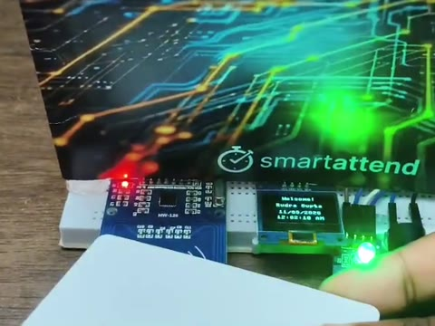

Python
Recursion, string rewriting, data wrangling, backend logic.
found in Chapters I, II, III. Always in my pocket, like Riptide
property of Joanne ✎ if found, please return
Ms. Joanne
is proud to present
a field journal of things I built,
what broke, and what I learned
I solemnly promise: every chapter
has something you can try ↓
Chapter I
My first project started with a strange idea: can a single line of text grow into a plant?
An L-system is a tiny set of rewrite rules. Start with a short string like X, and replace every letter with a longer pattern, again and again. After a few rounds the string is thousands of characters long.
Then a "turtle" reads it as drawing instructions: F means move forward, + and − mean turn, and [ ] means remember a spot and come back to it. That last rule is what makes branches.
the fern's rules
X → F+[[X]−X]−F[−FX]+XF → FF
Quest complete Built in Python with turtle graphics
Read the code on GitHubrewritten in JavaScript for this page, same idea as my Python version
Chapter II
In many rural schools, a child can quietly stop coming to class long before anyone notices. I wanted the school and the family to know the same day, so I built a reader that marks attendance in one tap.
SmartAttend is an RFID attendance system. A student taps their ID card on an RC522 reader wired to an ESP32. The little OLED screen welcomes them by name and the LED turns green.
Behind it, a Python backend logs every tap and feeds a Streamlit teacher dashboard with:
Right now I'm adding a face check with an ESP32-S3-CAM, so nobody can tap in for a friend.
Quest in progress Camera face check

Real footage of SmartAttend running: the reader, then the teacher dashboard.
jump to a scene
Chapter III
SmartAttend collects attendance. But does attendance actually tell us anything? I went looking for an answer in data.
Using records of 395 maths students, I trained two machine learning models to predict, after the first term, who is likely to fail the final exam, so a teacher can help while there's still time.
the finding that made it real
Pass rate by number of days missed
Quest complete scikit-learn, pandas, Jupyter
Read the notebook on GitHubThis runs my real KNN model (k = 11), trained on the same 316 students as the notebook.
a model can flag a student, but a teacher is the one who helps ♡
Inventory
Every quest left me with something new. Here's what's in my bag so far, and where I picked it up.
Recursion, string rewriting, data wrangling, backend logic.
found in Chapters I, II, III. Always in my pocket, like Riptide
Wiring an RC522 reader, reading card IDs, sending them over Wi-Fi.
found in Chapter II
Google Sheets for logging, Twilio for SMS alerts.
found in Chapter II
pandas, scikit-learn, cross-validation, confusion matrices.
found in Chapter III
Turning a Python script into a live dashboard.
found in Chapter II
This journal: layout, responsive design, the interactive demos.
found on this very page
The Next Chapter
So far I've mostly built alone. The next chapter, I'd like to write with other people.
I want to join IEEE Women in Engineering to build with people who are also learning, to run hands-on workshops that make a first circuit or a first model feel less intimidating, and to help more women see engineering as a place they belong.
At Camp Half-Blood, quests arrive with a prophecy. Mine come with a to-do list.
go on, tick one off for me ✓